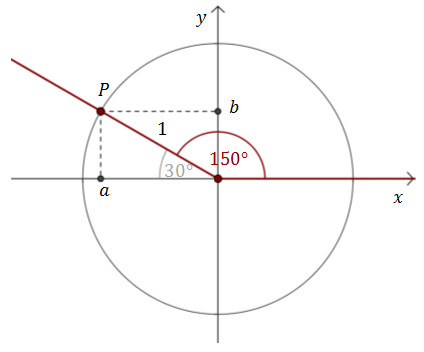
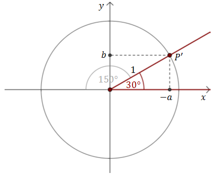
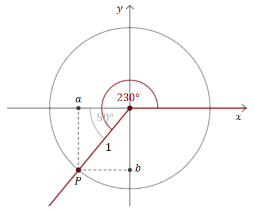
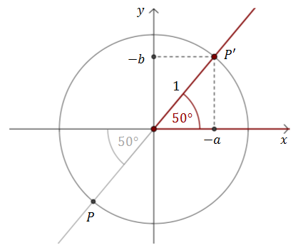
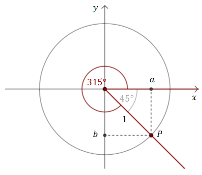
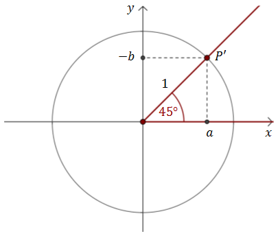

Z rozdziału
Pojęcie miary kąta i jego uogólnienie
wiemy już, że dowolny kąt możemy utożsamić z kątem z przedziału \(\left \langle 0^\circ , 360^\circ
\right \rangle\).
Pamiętamy, że jeżeli kąt \(\alpha \in \left \langle 0^\circ , 360^\circ \right
\rangle\), to jego ramiona pokrywają się z ramionami kąta o mierze \(\alpha + k\cdot 360^\circ \), gdzie
\(k\in \mathbb{Z} \). Wynika stąd bardzo przydatna obserwacja:
Niech \(k\)
będzie dowolną liczbą całkowitą. Wówczas: \[\begin{split} &\sin (\alpha +k\cdot 360^\circ )=\sin
\alpha \\[6pt]&\cos (\alpha +k\cdot 360^\circ )=\cos \alpha \\[6pt]&\operatorname{tg} (\alpha
+k\cdot 360^\circ )=\operatorname{tg} \alpha \\[6pt]&\operatorname{ctg} (\alpha +k\cdot 360^\circ
)=\operatorname{ctg} \alpha \\[6pt] \end{split}\]
Dla tangensa i cotangensa mamy nawet: \[\begin{split} &\operatorname{tg} (\alpha
+k\cdot 180^\circ )=\operatorname{tg} \alpha \\[6pt]&\operatorname{ctg} (\alpha +k\cdot 180^\circ
)=\operatorname{ctg} \alpha \\[6pt] \end{split}\]
Każdą funkcję trygonometryczną kąta większego od \(360^\circ \) możemy zamienić na
równoważną funkcję trygonometryczną kąta z przedziału \(\left \langle 0^\circ , 360^\circ \right
\rangle\). Przykładowo:
- \(\sin 400^\circ = \sin (40^\circ +360^\circ )=\sin 40^\circ \)
- \(\cos 442^\circ = \cos (82^\circ +360^\circ )=\cos 82^\circ \)
- \(\operatorname{tg} 1180^\circ = \operatorname{tg} (100^\circ +3\cdot 360^\circ
)=\operatorname{tg} 100^\circ \)
- \(\operatorname{ctg} (-510^\circ) = \operatorname{ctg} (210^\circ -2\cdot 360^\circ
)=\operatorname{ctg} 210^\circ \)
Zatem obliczanie wartość trygonometrycznych dowolnych kątów sprowadza się do
obliczania wartości trygonometrycznych ich kątów tożsamych w przedziale \(\left \langle 0^\circ ,
360^\circ \right \rangle\).
Teraz skupimy się już wyłącznie na kątach z przedziału \(\left \langle 0^\circ ,
360^\circ \right \rangle\).
Okazuje się, że obliczanie wartości funkcji trygonometrycznych dla kątów z
przedziału \(\left \langle 0^\circ , 360^\circ \right \rangle\), można sprowadzić jedynie do
przedziału \(\left \langle 0^\circ , 90^\circ \right \rangle\). Zatem jeżeli umiemy obliczać
wartości funkcji trygonometrycznych dla kątów ostrych, to umiemy automatycznie obliczać wartości
funkcji trygonometrycznych dla dowolnych kątów!
Wzory które umożliwiają robienie takich sztuczek nazywamy
wzorami
redukcyjnymi. Wzorów tych jest bardzo dużo i nie będę ich tutaj wypisywał. Możesz je znaleźć
w
zestawieniu wzorów trygonometrycznych. Osobiście nie
zachęcam do uczenia się wzorów redukcyjnych na pamięć, ponieważ jest ich bardzo dużo i łatwo mogą
się pomieszać.
Zawsze możemy samodzielnie wyprowadzić dowolny wzór redukcyjny, gdy tylko zajdzie
taka potrzeba. Możemy w tym celu skorzystać z definicji funkcji trygonometrycznych (trochę
trudniejsza metoda) albo z wykresu (łatwiejsza metoda, ale wymaga znajomości wykresów. Omówimy ją w
następnych rozdziałach).
Teraz na kilku przykładach zobaczymy jak można wyprowadzać wzory redukcyjne wprost
z definicji.
Oblicz \(\sin 150^\circ \text{, }\cos 150^\circ \text{ i} \operatorname{tg}
150^\circ \).
Zaczynamy od zaznaczenia w układzie współrzędnych kąta \(150^\circ
\). Narysujmy również okrąg jednostkowy (o promieniu 1).  Na przecięciu ramienia kąta i okręgu możemy zaznaczyć punkt
\(P=(a,b)\).
Z definicji funkcji trygonometrycznych wiemy, że: \[\begin{split} &\sin
150^\circ =\frac{b}{1}=b\\[6pt]&\cos 150^\circ =\frac{a}{1}=a\\[6pt]&\operatorname{tg} 150^\circ
=\frac{b}{a}\\[6pt] \end{split}\] Nie znamy na razie współrzędnych \(a\text{ i }b\), ale możemy
zauważyć, że jak odbijemy punkt \(P\) względem osi \(Oy\), to otrzymamy rysunek:  Dla kąta \(30^\circ \) liczymy, że:
\[\begin{split} &\sin 30^\circ =\frac{b}{1}=b\\[6pt]&\cos 30^\circ
=\frac{-a}{1}=-a\\[6pt]&\operatorname{tg} 30^\circ =\frac{b}{-a}\\[6pt] \end{split}\] Zatem:
\[\begin{split} &\sin 150^\circ =\sin 30^\circ =\frac{1}{2}\\[6pt]&\cos 150^\circ =-\cos
30^\circ =-\frac{\sqrt{3}}{2}\\[6pt]&\operatorname{tg} 150^\circ =-\operatorname{tg} 30^\circ
=-\frac{\sqrt{3}}{3}\\[6pt] \end{split}\]
Teraz słownie opiszemy zastosowaną metodę.
Algorytm
Żeby obliczyć z definicji wartości funkcji trygonometrycznych dla kąta rozwartego
\(\alpha \) , należy:
- Narysować w układzie współrzędnych okrąg jednostkowy i zaznaczyć w nim kąt środkowy \(\alpha
\) .
- Zaznaczyć punkt \(P\), czyli punkt przecięcia okręgu i ramienia kąta.
- Znaleźć w pierwszej ćwiartce punkt \(P'\) - symetryczny obraz punktu \(P\) (symetria może
być względem dowolnej osi lub początku układu współrzędnych).
- Obliczyć wartości funkcji trygonometrycznych dla kąta \(\beta \) wyznaczonego przez punkt
\(P'\).
- Wyrazić funkcje trygonometryczne kąta \(\alpha \) za pomocą funkcji trygonometrycznych
kąta \(\beta \).
Oblicz \(\sin 230^\circ \text{, }\cos 230^\circ \text{ i} \operatorname{tg}
230^\circ \).
Rysujmy w układzie współrzędnych okrąg jednostkowy i zaznaczamy w
nim kąt środkowy o mierze \(230^\circ \).  Na przecięciu ramienia kąta i okręgu zaznaczamy punkt \(P=(a,b)\).
Z
definicji funkcji trygonometrycznych wiemy, że: \[\begin{split} &\sin 230^\circ
=\frac{b}{1}=b\\[6pt]&\cos 230^\circ =\frac{a}{1}=a\\[6pt]&\operatorname{tg} 230^\circ
=\frac{b}{a}\\[6pt] \end{split}\] Odbijamy punkt \(P\) względem początku układu współrzędnych i
otrzymujemy punkt \(P'=(-a,-b)\). 
Wyznaczamy wartości funkcji trygonometrycznych dla kąta \(50^\circ \): \[\begin{split} &\sin
50^\circ =\frac{-b}{1}=-b\\[6pt]&\cos 50^\circ =\frac{-a}{1}=-a\\[6pt]&\operatorname{tg}
50^\circ =\frac{-b}{-a}=\frac{b}{a}\\[6pt] \end{split}\] Zatem: \[\begin{split} &\sin 230^\circ
=-\sin 50^\circ\\[6pt]&\cos 230^\circ =-\cos 50^\circ\\[6pt]&\operatorname{tg} 230^\circ
=\operatorname{tg} 50^\circ\\[6pt] \end{split}\] Wartości funkcji trygonometrycznych dla kąta
\(50^\circ \) możemy odczytać z tablic trygonometrycznych.
Oblicz \(\sin 315^\circ \text{, }\cos 315^\circ \text{ i} \operatorname{tg}
315^\circ \).
Rysujmy w układzie współrzędnych okrąg jednostkowy i zaznaczamy w
nim kąt środkowy o mierze \(315^\circ \).  Na przecięciu ramienia kąta i okręgu zaznaczamy punkt \(P=(a,b)\).
Z
definicji funkcji trygonometrycznych wiemy, że: \[\begin{split} &\sin 315^\circ
=\frac{b}{1}=b\\[6pt]&\cos 315^\circ =\frac{a}{1}=a\\[6pt]&\operatorname{tg} 315^\circ
=\frac{b}{a}\\[6pt] \end{split}\] Odbijamy punkt \(P\) względem osi \(Ox\) i otrzymujemy punkt
\(P'=(a,-b)\).  Wyznaczamy wartości
funkcji trygonometrycznych dla kąta \(45^\circ \): \[\begin{split} &\sin 45^\circ
=\frac{-b}{1}=-b\\[6pt]&\cos 45^\circ =\frac{a}{1}=a\\[6pt]&\operatorname{tg} 45^\circ
=\frac{-b}{a}=-\frac{b}{a}\\[6pt] \end{split}\] Zatem: \[\begin{split} &\sin 315^\circ =-\sin
45^\circ=-\frac{\sqrt{2}}{2}\\[6pt]&\cos 315^\circ =\cos
45^\circ=\frac{\sqrt{2}}{2}\\[6pt]&\operatorname{tg} 315^\circ =-\operatorname{tg}
45^\circ=-1\\[6pt] \end{split}\]